Вечер 1
Шквал на стартовых тросах
Познакомиться с экипажем и соперниками у доски, удержать тросы на сорванном старте и пройти первый участок до Перевёрнутого причала, где можно спросить о двух ударах колокола.
Открыть сценарий →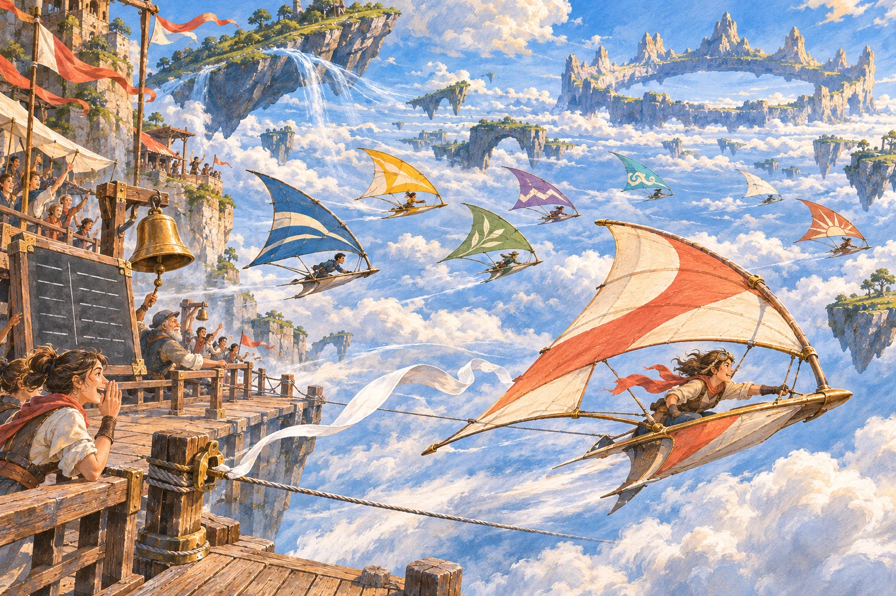
Восемь экипажей начинают Большой Небесный Обход — регату через острова, где меняется направление тяжести, а короткая дорога способна оказаться длиннее горизонта. Время каждого участка пишут мелом на доске этапов, и в финале вы стартуете ровно с тем отрывом, который заработали, — до четверти часа. Победитель получит приз и право вписать новый маршрут в знаменитый Атлас. Ваша экспедиция умеет летать, спорить и находить невозможные пути. Но уже на старте колокол бьёт не так, как положено, — и за красивой гонкой начинается другая борьба.
Перед чтением вступления сверьте место героев, присутствующих людей и предметы с итогом прошлого вечера. Если условия встречи отпали, сыграйте последствия там, где находится партия. Событие по расписанию может произойти за кадром. Герои узнают о нём от тех, кто был на месте.
Когда Веста бьёт тревогу, время останавливается для всех экипажей. Если герои пролетают мимо, спросите, кто из гонщиков остаётся помогать барже и кто видит уход команды. До снятия тревоги отметка шестого участка остаётся открытой. При следующей встрече Веста может выслушать свидетелей.
Снимаемся со старта. Остаёмся у судей следить за выпуском планеров. Регистрируем сход до подсчёта времени. В ведомости у нас сход. Мы можем засвидетельствовать разницу ударов для других экипажей, но получить место в гонке уже нельзя.
Сохраним образец мела и попросим журнал выдачи до следующего этапа. Доступные свидетельства — Наконечник с искрой, Журнал выдачи мела. Стрелку переписали поверх левой руки Орина. Доступ к мелу в ту ночь был у Т. Иста, одного доступа для обвинения недостаточно. Отдаём судьям след мела и открываем журнал для возражений. Передаём улики судьям, даём другим пилотам проверить знаки. Изменённый маршрут остаётся опасным и после разоблачения.
Орлы удерживают короткий карниз; экипаж теряет выигрыш во времени. Отмечаем на карте потерянный участок и обходим гнездовье. Обходим по ребру, заносим потерю минут в журнал, ждём Нери у обычной площадки. Судьи считают позднее прибытие.
Для игры без подготовки: что говорят люди, места в стороне от главной дороги и прохожие. Пометки о правде слухов — только для ведущего; сказанное за столом становится фактом мира, лишь когда вы его подтвердите.
«В Пустой вершине каждое слово возвращается эхом с трёх сторон. А перья там не падают, а плывут — куда течение потянет».
Правда. Правда, так устроена гора вечера 6. Слух готовит игроков к внутреннему проходу: перья и пыль показывают течение, и это видно на месте без всякой подсказки.
«В призовом сундуке на судейской барже — тысяча крон под печатью коллегии. Сам видел, как его грузили: четверо несли, вспотели».
Неправда. Это тот самый слух из таверны Порта Гелий, в который верит Горран Таль. Сундук пуст и полон песка (вечер 6). Слух не ведёт в тупик: он объясняет, почему налётчики берут баржу на абордаж.
«Знаки Атласа рисуют особым мелом — лазурным, с зелёной искрой. На время гонки его ящики опечатывают, и знаков никто не трогает».
Правда. Правда: это открытое правило регаты. Кто и как его нарушил, слух не говорит; вывод игроки строят сами по уликам вечеров 2–5.
«Гедда Айрен девятнадцать лет назад шла первой в финале — и сошла. Говорят, испугалась верхних ворот».
Отчасти правда. Шла первой и сошла — правда, в протоколе так и стоит «отказ от продолжения». Испуга не было: она повернула к застрявшему экипажу Наима. Правду скажут Наим или сама Гедда на прямой вопрос (вечер 4); поправлять слух ведущему не нужно.
«Наим с „Песочных Часов“ обещает ужин всякому, кто обгонит его на Стеклянной отмели. Говорят, ужинает он всё равно один».
Отчасти правда. Обещание ужина — правда, он повторит его сам на вечере 4. Что никто его не обгонял — присказка торговцев. Хороший повод заговорить с Наимом у кромки.
«Уронишь монету с верхнего настила Перевёрнутого причала — она упадёт тебе обратно в карман. Только с медной так, серебро не возвращается».
Неправда. Суеверие: монета улетает на нижний настил, и оттуда её с поклоном сбрасывают обратно, если повезёт. Безобидная шутка механиков на стоянке вечера 2.
«Школа ветров не выпустит в небо ни одного планера без осмотра — хоть ты фаворит, хоть грузовоз, хоть сам главный судья».
Правда. Правда, это правило Школы и вечера 5: осмотр общий и равный для всех. Слух подсказывает, что в Школе будет время поговорить с Феей и соседями.
«Облачные орлы уносят зазевавшихся пилотов в гнёзда и держат там до конца регаты, как цыплят».
Неправда. Неправда: орлы защищают гнёзда и отгоняют чужих от карниза, людей не уносят. На вечере 2 опытные пилоты просто обходят их карниз; страшилка годится для новичка у верстака.
«Медный „Ёрш“ везёт в регату подрядный груз меди. Потому и тащится последним, зато никогда не ломается».
Правда. Правда: груз Гальта Рудого — часть его открытой роли. Ничего о его тайне слух не говорит; старый капитан охотно поворчит о меди, если к нему подойти.
«На Тройном перевале кружку держат двумя руками: дым от неё тянет то вверх, то вбок, а чай норовит уйти к соседу».
Правда. Правда, так учат новичков на перевале (вечер 3). Удобная реплика, чтобы показать игрокам три тяжести до того, как планер войдёт в арку.
Тесная таверна у самого причала Порта Гелий, где столы привинчены к полу на случай шквала. Здесь до утра спорят о минутах и чертят на столешницах линии прошлых регат, так что каждый стол похож на карту. Над стойкой висит сломанное весло с надписью «Я срезал». Хозяин пускает спорщиков бесплатно, но берёт плату за каждое слово «наверняка».
Мастерская между двумя настилами Перевёрнутого причала: парусина в ней натянута прямо по воздуху, и шьют её с обеих сторон, одни стоя, другие вниз головой. Иглы здесь привязывают к запястью шнурком, чтобы не улетели на соседний настил. На стене висят обрывки парусов всех регат, подписанные мелом. Говорят, по заплатке мастерица узнаёт экипаж быстрее, чем по флагу.
Длинная скамья на нейтральной площадке Тройного перевала, где по обычаю регаты расплачиваются те, кто проиграл спор о завтраке. Проигравший приносит хлеб и чай, победитель садится на почётный край, ближе к арке. На спинке вырезаны имена тех, кто проигрывал чаще всех, и некоторые вырезали их сами, с гордостью. Сидеть на скамье, не заплатив, считается дурной приметой.
Крошечная будка на сухом песке у края Стеклянной отмели, где лоцманы держат запас флажков для безопасных карманов. Внутри пахучие связки шпагата, мешки с песком и лоток мела для меток. Будку не запирают: по обычаю отмели любой, кто нашёл сбитый флажок, может взять новый и поставить его на место. На двери нарисованы два паруса, второй чуть позади первого.
Плоский валун на краю Развилки Семи Знаков, весь иссечённый ножевыми зарубками. Каждый пилот, свернувший когда-то не в тот коридор, по обычаю вырезает здесь свою метку, когда возвращается, — не в наказание, а на память. Зарубок так много, что камень похож на ежа. Ученики Школы ветров приходят сюда перед выпуском и стараются не смотреть на свободное место.
Плотный портовый бочар в кожаном фартуке, с обручем на плече и стружкой в бороде.
«Бочка держит воду, планер держит ветер. Обоим нужна хорошая клёпка».
Может рассказать: Знает, что у причала Порта Гелий ровно восемь мест и что перед регатой их делят по жребию, а не по славе.
Худая парусная мастерица с иглой, привязанной к запястью; пальцы в мозолях, во рту вечно нитка.
«Заплатка не стыд. Стыд — дыра, которую не зашили».
Может рассказать: Знает, что мокрая парусина тяжелеет и тянет планер вниз, и советует сушить её до старта на верхнем настиле.
Загорелый лоцман отмели в широкополой шляпе, с охапкой маленьких флажков под мышкой и песком в сапогах.
«Сначала край плиты, потом отражение. Наоборот — только один раз».
Может рассказать: Знает, что маленькие флажки на отмели отмечают безопасные карманы и что метки на песке лоцманы ставят заново после каждого ветра.
Ученица Школы ветров в серо-голубой куртке; руки по локоть в лазурной пыли, на носу зелёная искорка.
«Три часа трёшь — минута сияет. Зато какая минута!»
Может рассказать: Знает, что школа трёт мел для коллегии из слюды своего северного карьера и что эта пыль искрит на солнце зелёным.
Молчаливый матрос судейской баржи с метлой и ведром; вечно в белой меловой пыли с головы до сапог.
«Мел вытру. Песок вымету. Слова — не моя работа».
Может рассказать: Знает, что баржа идёт с регатой прямыми коридорами и всегда встаёт у нейтральных площадок раньше гонщиков.
Старушка в лоскутной шали, которая продаёт на пристани прогнозы погоды на бумажных полосках по медяку за штуку.
«Шквал не слышно, пока не ударит. Хотите полоску — будете знать заранее».
Может рассказать: Знает, что шквалы в Разломе поднимаются снизу, из облачного океана, и первыми их чуют паруса, а не люди.
8 сессий по Около 3 часов: две или три сцены, всего 170 минут, и перерыв 10 минут в середине вечера. Подготовленные герои — уровень 3. Прочитайте первую сессию, выберите состав и передайте игрокам отдельную страницу героев.
В мастерской создайте или откройте свой черновик, выберите импорт пакета и укажите package.json либо нужный файл из variants. Проверьте сценарий и состав в предпросмотре; активацию подтверждает ведущий. Сюжетные развилки, часы давления и жанровые действия разрешаются ведущим — они не становятся автоматически сыгранными событиями.
Пакеты разных размеров используют первые N героев в порядке карточек. Дополнительные герои дают новые роли, но не обязательные ключи к истории. Выбор произвольного состава требует правки черновика и повторной проверки.
Простор, ветер в лицо, азарт каждой минуты, мел на пальцах, острое соперничество и уважение, которое зарабатывают поступками.
Познакомиться с экипажем и соперниками у доски, удержать тросы на сорванном старте и пройти первый участок до Перевёрнутого причала, где можно спросить о двух ударах колокола.
Открыть сценарий →Заметить, что наконечник стрелки створа перерисован, решить, кого предупредить, и пройти участок 2 (норма 70) ребром или гнездовым карнизом до Тройного перевала.
Открыть сценарий →Увидеть журнал выдачи мела, понять, чего Дария ждёт от приза, и решить, идти ли рядом с ней через узкую арку третьего участка.
Открыть сценарий →Пройти Стеклянную отмель по настоящим краям плит и решить, помогать ли лидеру регаты, когда «Белый Кречет» берут на абордаж.
Открыть сценарий →Подготовить планер на равной стоянке в Школе ветров, а у Развилки Семи Знаков решить, чьими минутами платить за чужую ложь: своими, соперников или ничьими.
Открыть сценарий →Найти внутренний проход горы, решить, что делать с протестами после развилки, и удержать судейскую баржу, когда её берут на абордаж.
Открыть сценарий →Ответить на сделку судьи, обойти капитанов и заработать их ленты, решить, готовить ли Нери к верхним воротам, и взять отрыв на последнем зачётном участке.
Открыть сценарий →Пройти финал гонки преследования отрезок за отрезком и у верхних ворот решить: повернуть к Нери и заплатить минутами или идти за первым местом.
Открыть сценарий →Только для ведущего. Сюжетные повороты держатся на мелочах, замеченных заранее: посейте их в названные вечера, а раскрытие отдайте героям, если они догадались раньше.
Кажется, что знаки Атласа врут сами — от сырости, ветра, чьей-то небрежности. На деле их ночью перерисовывает главный судья Тобель Ист: наконечник стрелки на Перевёрнутом причале и семь стрелок Развилки Семи Знаков. Он пишет правой рукой медным мелодержателем с тремя насечками, а мел для развилки взял у Феи Ланн лично.
У стартового колокола финала Тобель берётся за верёвку правой рукой в парадной перчатке, и солнце высвечивает вдоль кончиков пальцев лазурные полосы с зелёной искрой. Знаковый мел опечатан с первого колокола, а слюда не отстирывается. Пусть стол сам скажет, что видит; если стол молчит, первой спросит Фея. Тобель объясняет полосы «проверкой знаков по долгу», Веста забирает у него верёвку, и он уходит с площадки.
Колокол финала теперь в руках Весты при любом числе лент. Белые ленты решают только судьбу спорной строки: четыре и больше — доску переписывают до старта. Победителя разоблачение не назначает — его назовут часы гонки.
Кажется, что призовой сундук на судейской барже полон и стоит налёта. На деле Тобель растратил призовой резерв на свою неудачную экспедицию, опустошил сундук ещё до старта и запечатал его с песком внутри; печать датирована днём регистрации. Поэтому ему нужна победа Дарии: её приз зачтут в счёт долга ему самому.
В абордаже у Судейской террасы Горран Таль срывает с сундука крышку: серая мешковина и песок. «Пусто?! Песок! Кто-то обокрал меня раньше меня!» Веста, не выпуская журнал, читает дату на печати — день регистрации. Пусть стол сам сложит дату печати, долг Дарии и будущую поправку ветра. Тобель с террасы объявляет: «Нас ограбили. Сундук был полон».
Растрата теперь видна всем, кто стоял на палубе, но рука, правившая знаки, ещё не названа: песок говорит о пустой кассе, а не о меле. Тобель понимает это и на последней стоянке предлагает «Стрижу» чистую доску в обмен на тишину.
Кажется, что Дария Варр — фаворит, которому помогают правила, и соучастница судьи. На деле она не знает ни о растрате, ни о меле. Её кредитор — лично Тобель, а в её белом пакете с судейской печатью лежит «расчёт награды», где победитель вписан до второго участка. Её купили, не спросив.
Если пакет вернули с отмели, Дария ломает красную печать при героях и читает расчёт до запятой: «Победитель назван до второго участка? Если меня купили заранее, я верну покупку». Пусть стол сам решит, что ей ответить. Если пакет не вернули или не вскрыли, правда приходит позже: в Школе ветров по просьбе героев, на барже из рук Горрана или на террасе перед финалом.
Прочитавшая расчёт Дария поднимет ленту против своего кредитора и не станет блокировать «Стриж» в ответ на арку. Уступать победу она не обязана и не уступит: её минуты по-прежнему честные. Если «Кречет» победит, а строка не исполнена, она при всех откажется от зачёта.
Кажется, что Гедда Айрен когда-то струсила в финале, а Нери летит, чтобы не повторить материнский страх. На деле девятнадцать лет назад Гедда шла первой и повернула к застрявшему экипажу Наима Роша; снасти потом не выдержали, и в протоколе осталось только «отказ от продолжения». Гедда не оправдывается, Наим молчит, пока не спросят.
На осмотре в Школе ветров Гедда перетягивает шкот «Киновари» и на прямой вопрос о старом финале отвечает после паузы длиной в узел: «Я тогда не струсила. Я выбрала, куда смотреть». Из ящика угольника она достаёт вторую половину красного вымпела. Нери слышит. Пусть стол сам решит, говорить ли с ней. Если Наим уже рассказал всё на отмели, Гедда лишь подтверждает его слова.
В финале у верхних ворот этот выбор вернётся к «Стрижу»: красный парус сорвётся, и повернуть к нему будет стоить минут. Примирения никто не требует. Но теперь Нери знает, что запись в протоколе может значить другое — и что поворот можно сделать, не струсив.

Диспетчер с седой косой, чернильные рукава, связка причальных ключей на поясе, мел за обоими ушами.
Ведёт доску этапов, звонит в колокола по листу судьи и хранит журнал выдачи мела. Плывёт с регатой на судейской барже «Ровный счёт».
Честную регату без пропавших экипажей и без поправок задним числом.
При регистрации. «Лента — для правила девять. Остальное — минуты. Лента одна, минут много, не перепутайте».
На стоянке. «Участок закрыт. Стоянка — не время. Протесты — к судье, журнал — ко мне».
О журнале выдачи мела. «Журнал — любому капитану. Правило три. Записала мелом, не памятью».
О своём страхе. «Что я перепутала колокола. Шквал, руки мокрые. Может, второй я ударила раньше».
Увидев два листа. «По листу. Значит, по листу. Я звонила то, что было написано, — и только».
Об обвинении судьи. «Судью здесь не снимают. Ленты — у колокола. Правило девять, и никакого другого».
На абордаже баржи. «Время стоит! Все слышали? Стоит, пока я не скажу! Журнал не отдам».
Беря колокол. «Знаки опечатаны с первого колокола. Сегодня колокол мой. Правило девять — ленты!»
Втайне думает, что сама перепутала колокола на старте, и стыдится. Это её убеждение, а не вина: звонила она строго по двум листам, которые ей передали.
Не обвиняет по подозрению и не переписывает доску без отвода судьи. Не знает, что лежит в сундуке и откуда взялся мел на знаках.
Журнал показывает любому капитану по правилу памятки, без броска; про два колокола и два листа отвечает на прямой вопрос. На вопрос, чего она боится, признаётся, что думает, будто перепутала колокола; листы это снимают. На обвинение судьи до финала: «Судью здесь не снимают. Ленты — у колокола. Правило девять». Увидев перчатку на финале, берёт колокол сама.

Механик в заплатанном жилете; на запястьях на шнурках четыре мелка — белый, жёлтый, красный, зелёный. Левша.
Маршал контрольного створа на Перевёрнутом причале, по очереди чинит страховки всем экипажам.
Чтобы на его створе никто не сорвался и чтобы его знак не врал.
При первой встрече. «Узлы целы, соседи? Ну и ладно. Остальное я перевяжу».
Об узлах. «Узел не врёт, соседи. Врут те, кто его перевязывает».
Показывая руки. «Белый у меня, жёлтый, красный, зелёный. Синего с искрой нет и не было, соседи».
О наконечнике стрелки. «Стрелку ставил я. Наконечник рисовал не я: рука у меня левая, а штрих правый».
О ящиках мела. «Я свой ящик сдал. На баржу, при Весте. Запишите, что сдал».
Вслед «Стрижу». «Идите вдоль ребра, соседи! Стрелка врёт, а столб держит!»
У колокола финала. «Синего с искрой на моих руках нет, соседи. На чьих есть — смотрите сами».
Боится, что подумают на него: стрелку причала до старта ставил он сам. Это страх, а не вина.
Не видел, кто перерисовал наконечник, и судью вслух не называет.
На вопрос «это ваш штрих?» сразу показывает запястья и левую руку.

Белый камзол с зашитым воротником, футляр карт со стёртыми краями, на поясе белый капитанский пакет с судейской печатью.
Капитан «Белого Кречета», фаворит регаты; честолюбива, уважает точные условия.
Победить, закрыть долг и сохранить «Кречет» своим.
Предлагая спор. «Завтрак на Перевёрнутом причале. Платит тот, кто придёт позже. Условия я читаю до запятой».
На шквале. «Спор в силе! Завтрак из-за погоды не отменяется, даже если погода против».
О стрелке. «Столб — не условие. Ребро то же, что в прошлом году. Я его помню лучше, чем свой долг».
О долге. «Мой долг закрывается призом. Так написано, заверено коллегией. Вторым местом долги не платят — проверяла».
Предлагая тягу. «Условие простое, даже я его выполню: до развилки — вместе, дальше — каждый за себя».
Прочитав расчёт награды. «Победитель назван до второго участка? Если меня купили заранее, я верну покупку».
Отвечая блоком. «Запомнила. Теперь верну. Это не обида — это условие, которое вы сами написали».
Если её бросили на отмели. «Вы видели и прошли мимо. Правильно. Это гонка. Я бы, может, тоже прошла».
Её кредитор — лично Тобель Ист; договор разрешает зачесть приз в счёт долга, а при проигрыше «Кречет» идёт в залог. Об обмане и пустой кассе она не знает.
Не сообщница; после доказательств не обязана уступать победу.
Условие договора показывает, если спросить, кому она должна; расчёт вскрывает при героях, если они вернули пакет или попросили об этом позже. Прочитав, в ярости.

Короткие тёмные волосы, красная гоночная лента, деревянная счётная рамка на ремне.
Капитан лёгкой «Киновари»; любит короткие линии, у неё первая большая регата.
Победить своими решениями, а не как продолжение маминой истории.
При первой встрече. «Ставлю минуту, что обе ваши строки будут ниже моей».
На шквале. «Сама! …Нет. Трос! Два к одному, что не поймаете!»
Если трос поймали. «Я не просила. …Спасибо. Запишите себе. Три минуты на прямой — это моё».
Отдавая счёт порывов. «Долги не люблю. Считаю порывы вслух: левый, левый, правый. Берите, мы в расчёте».
О маме. «Не надо меня беречь. Я не мама. Там написано: отказ от продолжения — я читать умею».
О верхней линии. «Верх. Я считаю на счётах, а не на страхе. Короткая линия — моя».
Сорвавшись у ворот. «Раз… два… Рамка не считает падение. Только трос. Давай».
Считает запись «отказ от продолжения» доказательством маминого страха. Это ошибочное убеждение: о спасении экипажа Наима она прямо не слышала.
Не позволяет решать за неё о маме; не уступает победу из благодарности.
О маме говорит наедине, без публики; на новые факты отвечает вопросами, а не согласием. Подвели Нери те, кто: не ловили её трос на шквале; раскрыли стрелку и не пустили ракету (если стрелку не раскрыли, ракета не в счёт); ушли с развилки, не предупредив; блокировали её на У7. У такого экипажа она не берёт вторую страховку. Если герои блокируют её на У7 после того, как она взяла их страховку, она возвращает её, и −2 к цене поворота потеряны.

Обветренное лицо, трость, большой складной деревянный угольник, рабочий жилет.
Ветеран, наставница пилотов в Школе ветров; в финале — смотритель безопасности на площадке под верхними воротами Кольца Короны.
Чтобы Нери выбрала свою меру успеха и не считала заботу слабостью.
При первой встрече. «Считай рывки, а не ветер. Ветер считать бесполезно, он сам тебя посчитает».
Чиня шкот. «Угольник не спорит. Он показывает угол. Смотри… сама».
О старом финале. «Я тогда не струсила. Я выбрала, куда смотреть. Протокол записал другое».
О верхних воротах. «Порыв бьёт справа… после второго рывка. Верхние ворота не любят спешки. Они любят счёт».
О площадке, тем, кто не подвёл. «Площадка под верхними воротами держит два планера. Туда можно вытянуть того, кто сорвётся».
О дочери. «Я не прошу её повторять. Я прошу её выбрать — своё, а не моё и не протокольное».
На срыве «Киновари». «Трос!.. О камень трётся. Лодке — двадцать минут. Двадцать, не меньше».
Девятнадцать лет назад повернула к экипажу Наима, когда шла первой; снасти потом не выдержали, и она сошла. Сама не рассказывает, потому что не хочет оправдываться перед дочерью.
Не знает о кассе и меле; не требует от дочери повторять её выбор; планера у неё нет, сама никого не спасает.
Правду о старом финале говорит на прямой вопрос. Про площадку под верхними воротами — только экипажу, который Нери не подводил: на прямой вопрос о безопасности ворот или сама, ночью. Порыв объясняет любому, кто спросит.

Дымчатые очки, мерный шест, песочные часы на шнурке; к шесту привязана выцветшая красная полоса вымпела.
Капитан «Песочных Часов», знаток Стеклянной отмели; обещает ужин тому, кто обгонит его на отмели.
Хороший замер для Атласа и чтобы молодые не повторяли его старую ошибку.
При первой встрече. «Не верьте глазам, верьте ногам. Обгоните меня на моей отмели — с меня ужин».
О правиле отмели. «Три шага по песку — один в отражении. Ошибётесь на шаг — заплатите минутой».
О красной полосе. «Это вымпел Гедды Айрен. Я видел её корму впереди. А потом увидел её нос — она шла ко мне».
О ялике. «Утром видел ялик, которого нет. На отмели так бывает. Иногда — нет».
На абордаже «Кречета». «Лодка настоящая! Бейте по канату, не по отражению!»
У черты финала. «Песок пересыпался. Считайте не места, а тех, кто дошёл, — я их всегда считаю».
О Нери. «Я не прошу её благодарить. Я прошу её знать. Остальное пусть решает сама».
Девятнадцать лет назад застрял в боковом потоке; Гедда шла первой и вернулась к нему, разрезала свой вымпел на метки спасательной линии. Он не скрывает этого, но и не рассказывает без вопроса.
Ничего не знает о кассе, меле и Тобеле; не просит Нери чувствовать долг за поступок матери.
О полосе на шесте рассказывает сразу, если спросить о ней или о старом финале.

Мел за ухом, трость со стрелками ветра, рабочее пальто с широкими карманами.
Учительница Школы ветров, ведёт технический осмотр; школа трёт знаковый мел для коллегии из слюды своего северного карьера.
Чтобы ученики проверяли даже авторитетов и чтобы гонка давала открытия.
На осмотре. «А вы проверили, или вам показали? Это разные вещи, и одна из них — не ваша».
О крошке мела. «Этот мел я тёрла сама. Северная слюда — у неё зелёная искра, другой такой в Разломе нет».
О палочке для судьи. «Вчера вечером — судья. Ящик на барже, сказал, отсырел. А вы бы отказали главному судье?»
О пути с развилки. «Куда смотрит свободная лента? Вверх. На северо-северо-восток. Проверите — или поверите?»
О слюде. «Слюда не отстирывается. Её можно спрятать в перчатке, но нельзя выстирать из перчатки».
У колокола финала. «Знаковый мел? На ваших пальцах? Во время гонки? Это вопрос, коллега, а не обвинение».
О часе осмотра. «На что вы потратите час — и кто это проверит?»
Вечером перед пятым участком дала Тобелю палочку знакового мела из личного запаса («ящик на барже отсырел»), подумала, что это пустяк, и теперь стыдится.
О кассе и долгах не знает; отделяет увиденное от догадок.
Состав мела объясняет любому, кто принесёт крошку или спросит про искру; о палочке для Тобеля говорит на прямой вопрос, кто брал у неё знаковый мел.

Тёмная мантия, медная линейка, медный мелодержатель с тремя насечками у зажима. Белые перчатки меняет каждый вечер; парадная пара с медной пуговицей лежит в лаковом футляре.
Главный судья Обхода: пишет стартовые листы, принимает протесты, следит за равными правилами.
Победы Дарии и тишины вокруг пустого резерва.
При регистрации. «Правила одинаковы для всех. Я лишь слежу, чтобы все одинаково их понимали».
На шквале. «Порядок старта един для всех, молодые люди. Ветер в листе не указан».
О протестах. «Протест принят к сведению. Сведение, как вы помните, ещё не рассмотрение. Принесите вещь».
Об обвинении. «Обвинение — это протест. С вещью, под доску. Я запишу и его».
О штрафе за правку. «Самовольная правка знаков Атласа. Пять минут, молодые люди, вам ещё повезло».
Предлагая сделку. «Снимите свои протесты — я сниму штраф и впишу вам поправку ветра. Всем будет чище».
После абордажа. «Нас ограбили. Сундук был полон. Всё, что здесь пропало, пропало у коллегии».
У колокола финала. «Это… я проверял знаки. По долгу. Молодые люди, вы же понимаете — по долгу».
Растратил призовой резерв, опустошил сундук до старта и сам ночью правил знаки Атласа.
Не управляет погодой и налётчиками, не слышит тайных разговоров; после отвода не может ничего приказать; доказательства не исчезают чудесным образом.
На обвинение до финала отвечает процедурой: «Обвинение — это протест. С вещью, под доску». На вечере 7 предлагает героям тихую сделку. У колокола финала надевает парадные перчатки, объясняет полосы «проверкой знаков по долгу» и уходит с площадки, когда Веста берёт верёвку.

Капитан облачных налётчиков с брига «Сорока»; кожаный плащ в заплатах из чужих парусов, абордажный крюк на плече, серебряный свисток.
В Разломе его знают как налётчика, который грабит грузы и не трогает людей без нужды.
Призовой сундук с судейской баржи.
При первой встрече. «Груз — мой, люди — ваши, ссориться нам не о чем».
На барже. «Сундук и тишина — вот и вся торговля, господа гонщики».
Если отдали путевой лист. «Спасибо за карту, господа! Хорошая карта — полдела, вторая половина — кошки».
Увидев песок. «Пусто?! Песок! Кто-то обокрал меня раньше меня!»
Уходя с баржи. «Я не воюю за пустой ящик. Отцепляйте, ребята. Свисток — и домой».
Бросая расчёт награды. «Ваш расчёт — пустышка! Как и сундук. Кто-то в этой регате ворует лучше нас».
Верит слуху из таверны Порта Гелий, что сундук полон: «тысяча крон под судейской печатью».
Не воюет за пустой ящик и заложников за пустоту не держит; ничего не знает о Тобеле, меле и долгах.
Увидев песок в сундуке, кричит об этом на всю палубу.

Худой, бритая голова, чёрная борода, тёмно-фиолетовый кафтан; на ремне медная ночная зрительная труба.
Капитан лёгкой чёрной «Ночной Моли». Азартный, то срезает, то теряется; любит пари и чужие хвосты.
Хоть раз выиграть участок срезом, на который никто больше не решился.
При первой встрече. «Кто не срезает, тот возит воздух. А воздух, осторожные, нынче дёшев».
Обгоняя. «Ну что, осторожные, — догоняйте воздух! Он у меня за кормой».
О стрелке. «Стрелке верю, как погоде: пока она в мою сторону».
Предлагая пари. «Ставлю промер против ужина, что буду на перевале раньше вас».
Отдавая долг. «Должок, осторожные. Промер Пустой вершины — мой, верный. Сам я там иду на ощупь».
О своей мачте. «В прошлом году оставил в тоннеле мачту. Тоннель её не вернул — зато промер оставил мне».
На седьмом участке. «Обгоните меня на седьмом — подниму ленту. Не обгоните — с вас ужин Наиму».
В прошлом году он прошёл внутренний проход Пустой вершины, снял верный промер и сломал там мачту. С тех пор он идёт внутри медленно, на ощупь, — отсюда его время, — и промер никому не показывает.
Ничего не знает о кассе, долгах и о том, кто правил знаки. Промером даром делится только с тем, кто ему однажды помог.
Отдаёт промер даром, если на У2 его отозвали ракетой, иначе за минуту (пропустить «Моль» в тоннель первой); подведённым героям — никак. Поднимет ленту, если герои его уберегли, если его минуты в спорной строке или если у колокола назовут искру со стрелки; если герои его подвели (обманули молчанием на развилке, блокировали), не поднимет ни за что.
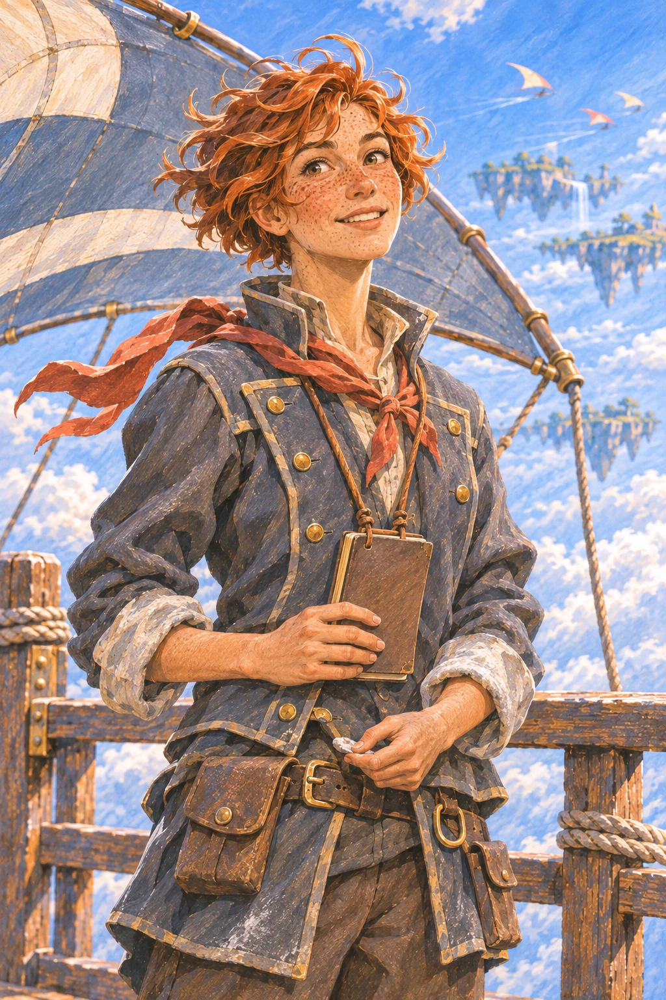
Недавняя ученица Школы ветров: короткие рыжие волосы, веснушки, серо-голубая ученическая куртка с меловыми манжетами, тетрадь на шнурке.
Капитан учебной «Сизой Сойки»; первая регата, в которой она капитан, а не ученица.
Доказать, что она больше не ученица, и выиграть свой школьный пятый участок.
При первой встрече. «Пятый участок — мой школьный склон. Я его наизусть знаю… почти».
О знаковом меле. «Знаковый мел я сама тёрла в ступках. Лазурь и северная слюда — нет, точно по учебнику».
О палочке для судьи. «Учитель Фея вчера отдала судье свою палочку. И ворчала. Это… это ведь не секрет?»
О развилке. «Школьный промер — вверх, на северо-северо-восток! Нет, точно, я не путаю. Почти».
О своём страхе. «На экзамене я перепутала коридоры именно здесь. С тех пор знаю наизусть — и всё равно боюсь».
О ленте. «Если я скажу у колокола… меня услышат? Почти уверена, что нет. Но я скажу».
У колокола финала. «Мел школьный. Я его тёрла. Я узнаю его по искре, как свой почерк».
На выпускном экзамене она однажды перепутала коридоры той самой развилки и до сих пор боится её; «знаю наизусть… почти» — это про страх.
Ничего не знает о кассе, долгах и замыслах судьи; о палочке знает только то, что слышала от Феи.
Проговаривается о палочке перед стартом У5, если Фею не спросили. Если «Сойку» обманули и герои не садились у столбов, подбирает обломок и отдаёт Фее. У колокола подтвердит, что мел школьный.
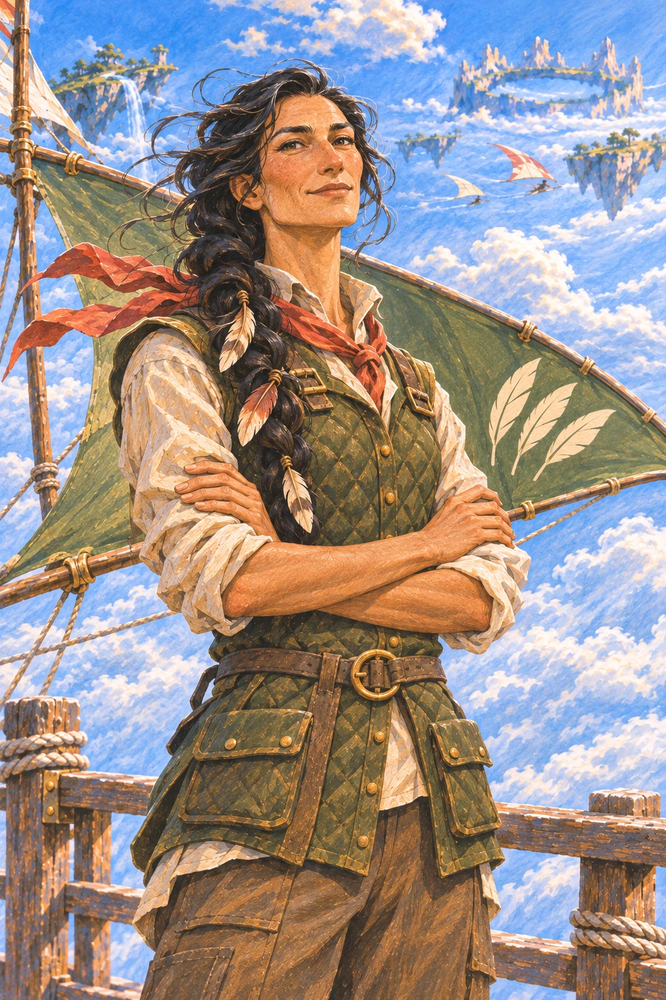
Высокая, в длинную чёрную косу вплетены три пера, стёганый зелёный лётный жилет, спокойный ястребиный взгляд.
Капитан «Трёх Перьев». Осторожная, никогда не рискует: три проверки перед каждым вылетом.
Пройти все семь участков без происшествий и без единого штрафа.
При первой встрече. «Три пера — три проверки. Потом полетим, и ни минутой раньше».
Перед вылетом. «Первое — снасти. Второе — ветер. Третье — и только потом скорость».
О доказательствах. «Три проверки: бумага, печать, свидетель. Слова в этот список не входят».
О старом протесте. «Восемь лет назад я подала протест без вещи. Штраф, смех. Больше без бумаги не подаю».
О правиле девять. «Правило девять я знаю наизусть. Отвод судьи на моей памяти не случался ни разу».
Поднимая ленту. «Бумага есть. Печать есть. Свидетель есть. Поднимаю — один раз и спокойно».
Восемь лет назад она подала на Обходе протест без вещи, получила штраф и насмешки; с тех пор верит только бумаге с печатью и датой.
Не знает ни о кассе, ни о знаковом меле; не поднимет ленту по слову или догадке.
Поднимет ленту, если её минуты в спорной строке, если герои уберегли её на развилке или если ей покажут бумагу с записью и датой: страницу журнала, дату печати и слово Весты.

Коренастый, огромные медно-рыжие усы, старомодный медный лётный шлем с наушниками, трубка, которую он никогда не зажигает.
Капитан тяжёлого грузового «Медного Ерша». Медленный, надёжный, ворчливый; везёт в регату подрядный груз меди.
Дойти свой последний Обход до конца и сдать медь по подряду.
При первой встрече. «Медь не торопится, зато и не ржавеет. Медь доходит».
О колоколе. «В мои сорок лет колокол был один для всех. Покажете бумагу — поверю».
Об увязке груза. «Тяжёлое вяжут на смене тяжести, а не после. После — уже поздно, медь пошла».
О судье. «Судью я помню молодым. Хороший был судья. Не заставляйте меня думать иначе без бумаги».
О последней регате. «Последний мой Обход. В сумерках я лечу по слуху, а экипажу не говорю. И вы не скажете».
На финише. «Дошёл. Медь дошла. Остальное — мелом на доске, не моё дело».
Это его последняя регата: в сумерках он почти не видит и летит по слуху, а экипажу не говорит.
Ничего не знает о кассе, знаковом меле и долгах; судью уважает по старой памяти.
Поднимет ленту, если его минуты в спорной строке, если герои уберегли его на развилке, если на вечере 7 помогли увязать медь или если у колокола ему покажут два стартовых листа.

Парящие каменные острова над светлым облачным океаном, у которого нет ни дна, ни берега. Естественные швы небесного течения наклоняют тяжесть, и видимый сосед может оказаться на другом витке пути. Здесь летают на парусных планерах, а дороги между островами записаны в Небесном Атласе.

Стартовая гавань с восемью причальными местами, открытым столом регистрации и длинным общим верстаком для экипажей. Над причалом — большая доска этапов, а на одной балке висят два стартовых колокола. Пахнет лаком, мокрой парусиной и мелом; в портовых тавернах до утра спорят о минутах и пересказывают слухи о призе.

Два настила обращены подошвами друг к другу. Между ними натянуты страховочные линии и стоят полосатые контрольные столбы со стрелками створа. Маршал створа чинит здесь страховки всем экипажам по очереди, и стоянка звенит от карабинов. Ниже, у скального карниза, гнездятся орлы, и опытные пилоты обходят его стороной.

Три каменные арки пересекаются над пустотой. Каждая задаёт собственное направление тяжести, и между курсами устроена нейтральная площадка отдыха, у которой швартуется судейская баржа. Дым от кружки здесь тянется то вверх, то вбок, и новичков учат держать её двумя руками. Самая узкая арка пропускает планеры только в ряд.
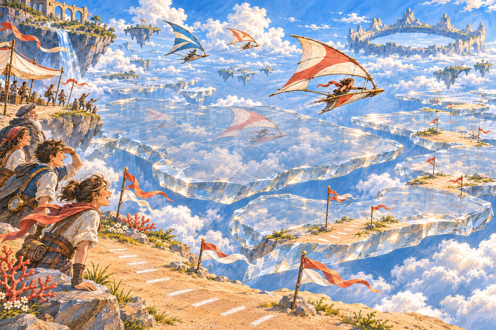
Прозрачные плиты отражают паруса с разной задержкой: под ними видны облака, и каждый парус отражается дважды, второе отражение опаздывает на вдох. Плиты сухо щёлкают, когда сдвигается отражение. На песчаных краях нанесены мерные шаги, а безопасные карманы отмечены небольшими флажками. Здешние лоцманы говорят: сначала край плиты, потом отражение.

Школа навигаторов на плоском склоне. Коридоры выходят на стены соседних комнат; во дворе ученики трут мел в ступках, а учителя проводят технический осмотр гонщиков. Школа делает знаковый мел для коллегии из слюды своего северного карьера, и лазурная пыль во дворе искрит зелёным. Без осмотра отсюда не выпускают в небо ни одного планера.
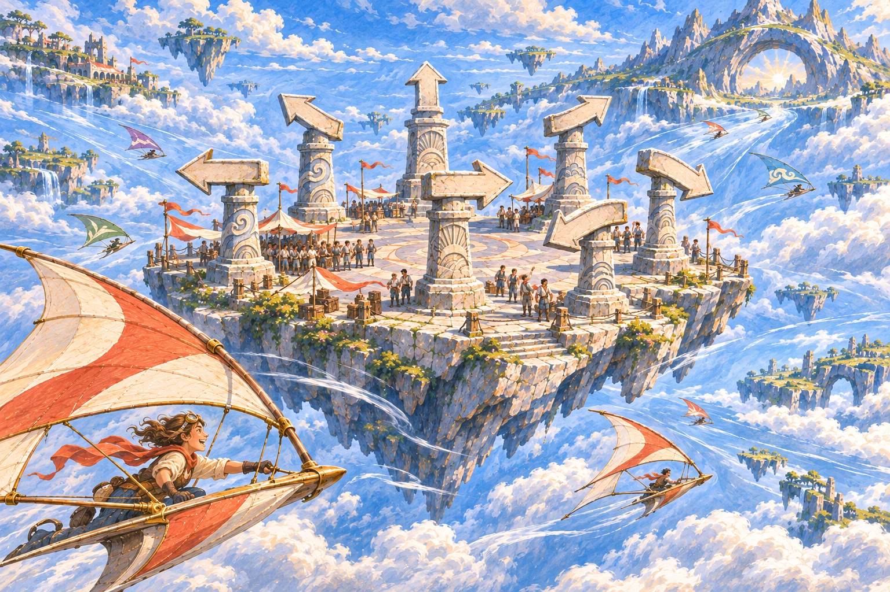
Семь каменных столбов-указателей Атласа на широком перекрёстке потоков; от развилки расходятся четыре воздушных коридора, и только один ведёт к Пустой вершине. Стрелки на столбах маршалы рисуют до старта, и по ним сверяют курс все экипажи. Ветер здесь путает паруса, а свернувший не в тот коридор теряет время, которое уже не отыграть.

Каменная гора полая внутри. Через три пролома видны облака; вдоль внутренней поверхности тянутся узкие уступы и естественные воздушные тоннели. Внутри гора гудит, как перевёрнутый колокол, и каждое слово возвращается эхом. Перья и пыль здесь не падают, а плывут туда, куда тянет течение.
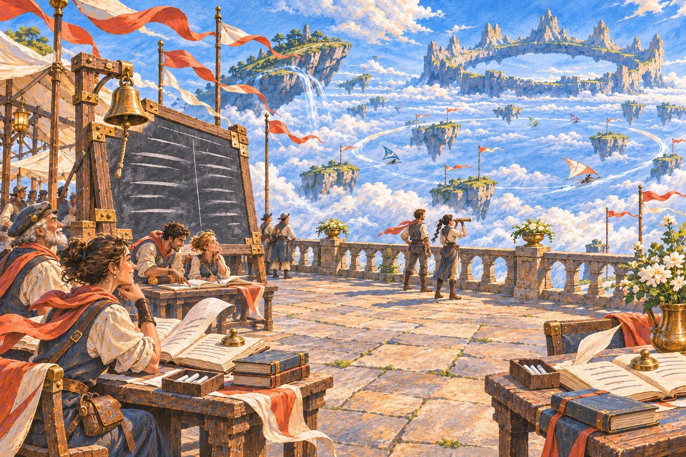
Открытая площадка перед последним этапом с доской результатов и обзором на внешний круг будущего финала; у внешнего края — швартовые кнехты для судейской баржи. Отсюда видна вся Корона целиком, с тремя разрывами в ободе. Капитаны приходят сюда перед последним кругом сверить минуты и посмотреть, как у верхних ворот бьётся пробная лента.

Огромная природная каменная корона. Три разрыва в её ободе образуют финальные ворота, а широкая нижняя площадка служит финишем и местом награждения. На каменной арке висит колокол финала. Вдоль внутренней стены идёт сильный поток, и под верхними воротами весь заезд дежурит смотритель безопасности.
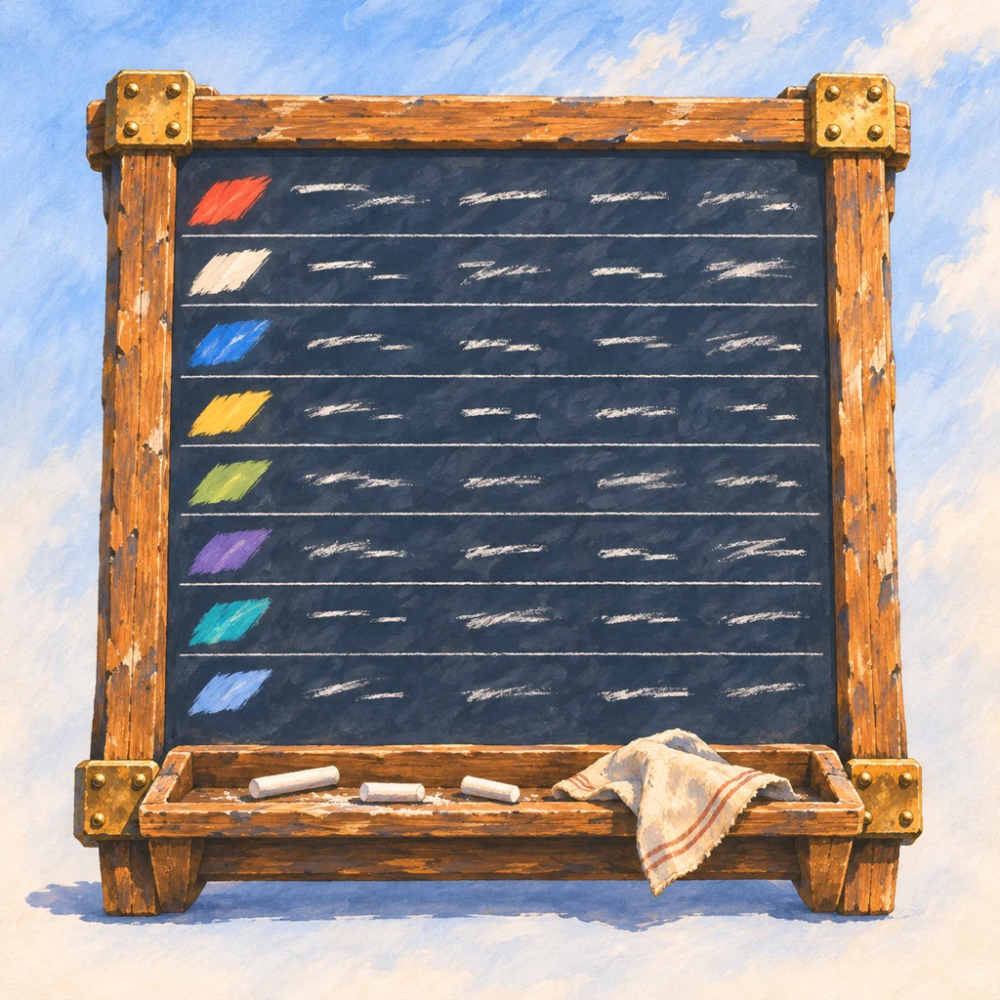
Большая грифельная доска в дубовой раме. Восемь строк с полосками цветов экипажей, столбцы участков, внизу лоток с белым мелом и мокрая тряпка. Мел въелся в рамку и в рукава того, кто пишет.
Вся таблица этапов: восемь экипажей, время каждого участка, сумма и отставание от лидера. После первого вечера доска стоит на корме судейской баржи «Ровный счёт». Ведущий читает её вслух после каждого участка, игроки сверяют копию. Под доской пишется спорная строка. Порядок старта финала берётся отсюда.

Два бронзовых колокола на одной балке над причалом. У одного свисает верёвка с белой лентой, у другого простая пеньковая. Тон у них чуть разный.
Задают старт: первый удар рвёт тросы шквалом, второй звучит через минуту, третий выпускает остальных. В первый вечер это спор о минуте, а не улика против кого-либо. Игроки могут спросить Весту, почему удара два. Предмет связан с уликой «Два удара одного старта».
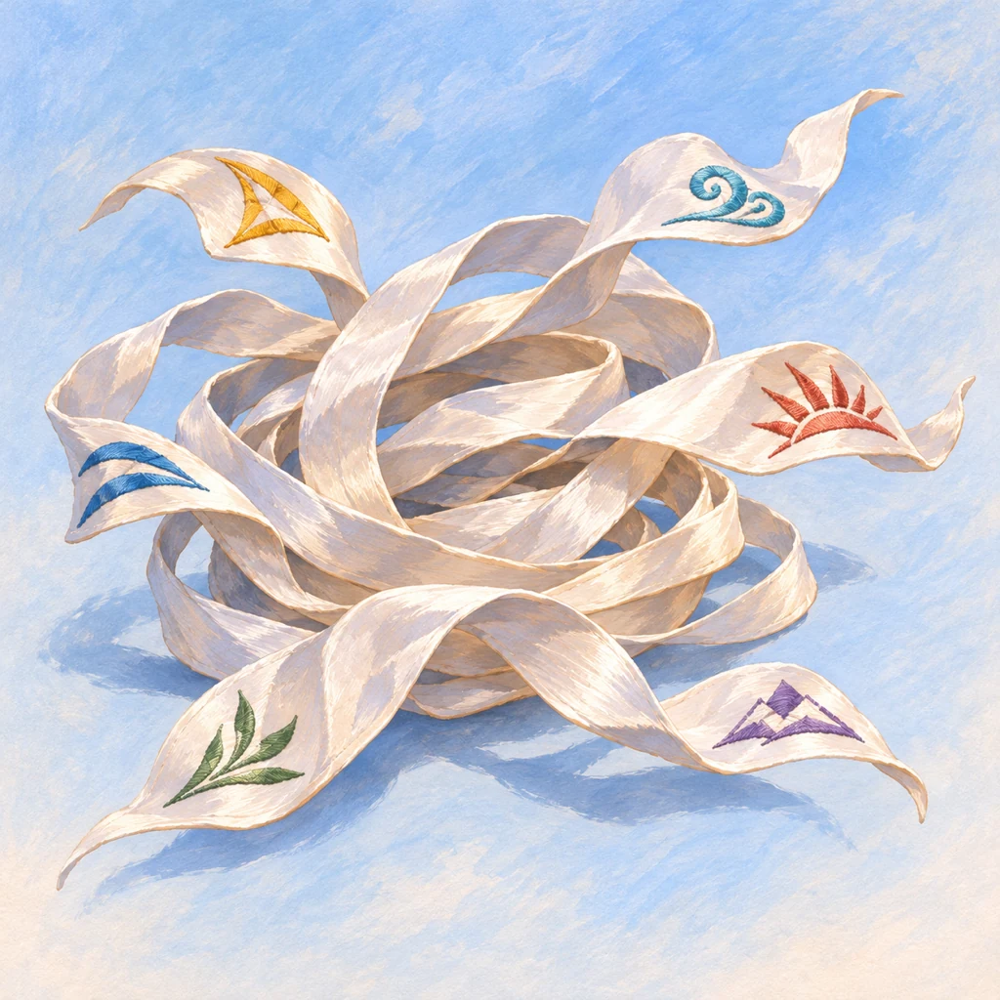
Длинные белые шёлковые ленты, у каждой вышит номер экипажа. Свёрнуты в плетёную корзину у стола регистрации и пахнут лавандой и пылью.
Веста раздаёт ленты капитанам на регистрации. Правило 9 памятки: Отвод судьи — у колокола финала: каждый капитан вправе поднять белую ленту. Четыре ленты и больше — спорная строка исполняется до старта, минуты возвращаются. Меньше четырёх — строка остаётся записанной, но не исполняется. Капитан, которого герои подвели — заблокировали, оставили в беде, обманули молчанием на развилке, — ленту за них не поднимет ни по просьбе, ни за вещь. Дария поднимает ленту только если читала расчёт. Кто поднимет ленту, ведущий ведёт заранее по поступкам, видным на доске.
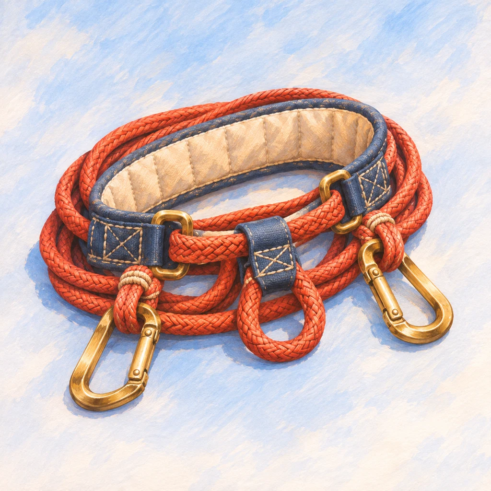
Плетёный трос в красной оплётке с двумя латунными карабинами. Отшлифован руками, на концах аккуратные обмотки.
На шквале первого вечера ею можно без броска поймать трос «Киновари»: +3 минуты, но страховка остаётся на кнехте Порта Гелий. Если её сберегли, на вечере 7 её можно отдать Нери — если экипаж её не подводил: вторая страховка на «Киновари», цена поворота в финале −2. Отданная или оставленная страховка героям уже не принадлежит.
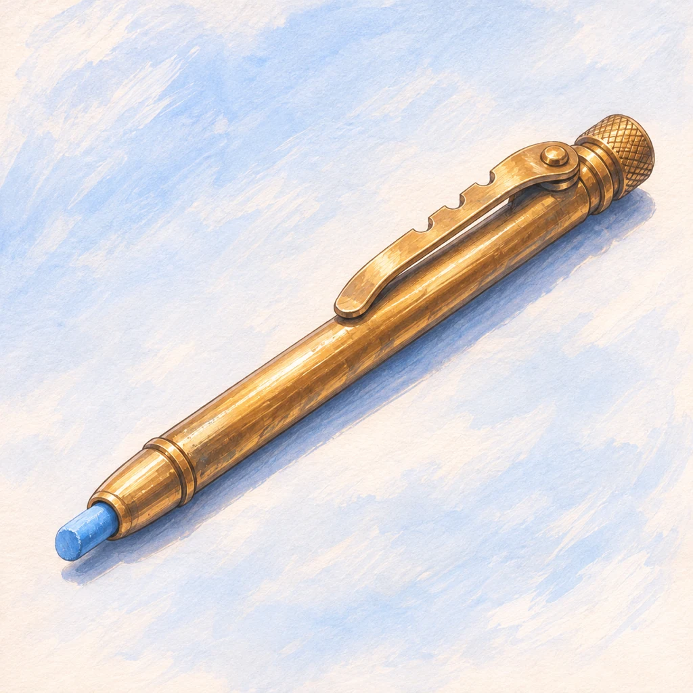
Тонкий медный футляр с пружинным зажимом. На зажиме три аккуратные насечки. Лежит на судейском столе рядом с линейкой и перчатками.
Лежит у судьи на столе при регистрации. Если игроки приглядятся, ведущий описывает три насечки без выводов. Позже форму зажима можно сравнить с вмятинами на найденном обломке мела. Предмет входит в путь А к знаковому мелу.

Каменный столб в полоску с поворотной стрелкой. Наконечник стрелки нарисован лазурным мелом, на солнце в нём мелькают зелёные искры. Такие же столбы стоят у каждой развилки маршрута.
Читать путь: куда смотрит стрелка, туда и идёт линия. На Перевёрнутом причале наконечник свежий и блестит. Его можно потереть пальцем и осмотреть, спросить маршала Орина. Тот же знак на семи столбах Развилки Семи Знаков можно развернуть обратно. Предмет входит в путь А к знаковому мелу.

Толстая книга в белой меловой пыли на столе диспетчера баржи. Переплёт перетянут шнуром с печатью коллегии, поля исписаны мелким почерком.
Любой капитан по правилу памятки вправе попросить Весту показать его. В журнале записаны выдачи и вскрытия ящиков знакового мела. Показать его Веста может открыто или тихо. Вторая запись есть с вечера 5. Если книгу потеряют на барже, Веста по памяти продиктует записи.
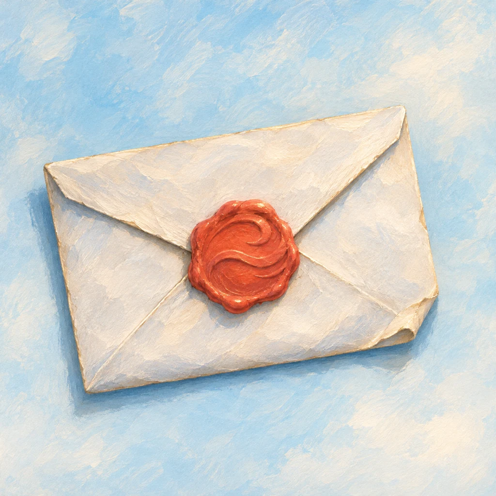
Плотный белый конверт с красной судейской печатью, всегда на поясе капитана «Белого Кречета». Кромки слегка потёрты, печать цела.
Дария носит его запечатанным. Герои могут вернуть его ей в бою на четвёртом участке или попросить вскрыть его на вечерах 5–7. Содержимое она читает при героях и выдаёт раздатку «Расчёт награды». Если пакет унесли налётчики, запасной путь — слова Горрана на палубе баржи.

Выцветшая красная полоса ткани с обтрёпанным краем. Привязана выцветшим шнуром к мерному шесту Наима и треплется на ветру отмели.
Повод заговорить с Наимом о старом финале: он рассказывает сразу, если спросить. Показывает, чей вымпел когда-то был разрезан. Помогает героям понять, что запись «отказ от продолжения» не вся правда. К обману регаты не относится.

Короткий лазурный обломок с зелёной искрой. На боках три вмятины от зажима. Лежит у подножия пятого столба.
Находится сам, когда герои правят знаки или садятся у столбов. Крошку можно отнести Фее Ланн в Школу ветров, а вмятины сравнить с мелодержателем. Предмет сводит вместе пути А и В.
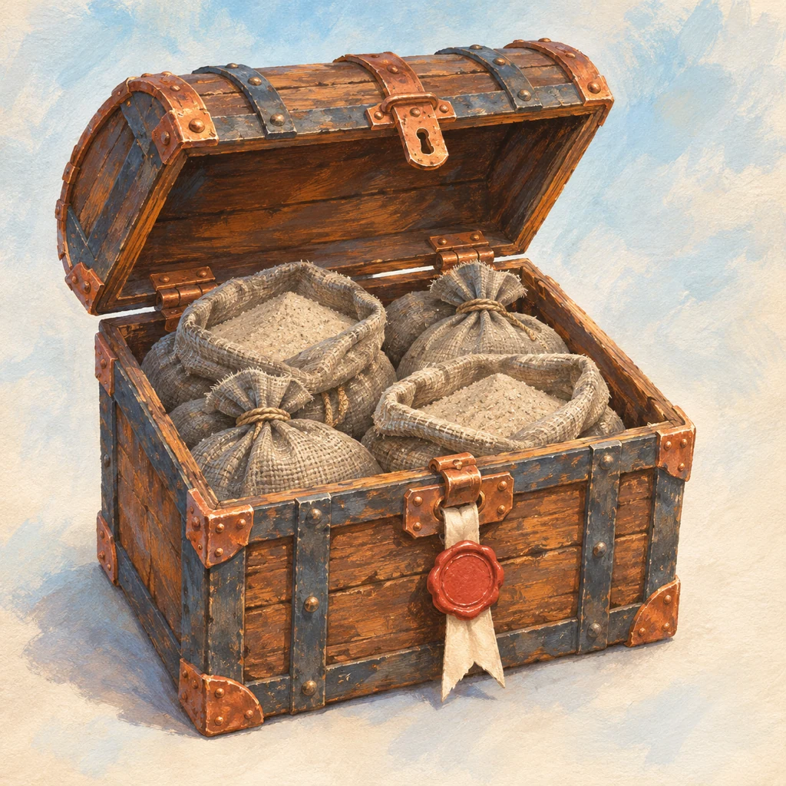
Окованный медью сундук с судейской печатью на замке. Стоит на палубе баржи у мачты, ручки обёрнуты кожей.
Цель абордажа на шестом участке. Горран срывает крышку в конце первого раунда — или сразу, как кто-то крикнет, что сундук пуст. Печать с датой можно рассмотреть после боя; Веста подтверждает дату. Предмет — вещественная улика растраты.
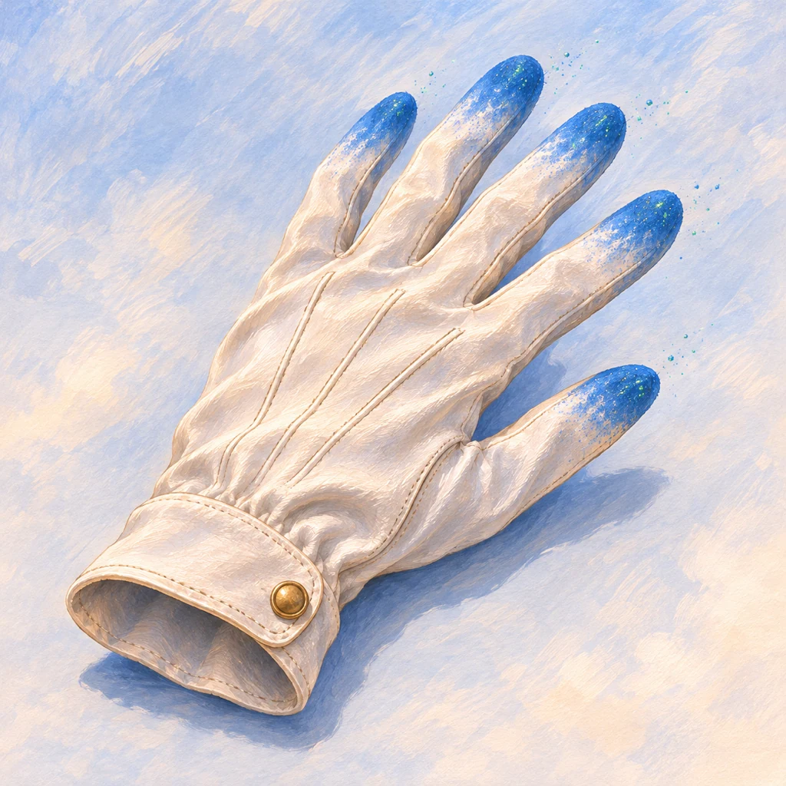
Повседневные белые перчатки судья меняет каждый вечер — они безупречно белые. Парадная пара с медной пуговицей лежит в лаковом футляре на его столе.
До финала на вопрос о перчатках: «Перчатки безупречно белые. Он меняет их каждый вечер.» Если просят открыть лаковый футляр: «Футляр заперт, ключ у судьи на цепочке: „Парадные — для колокола финала“.» У колокола финала на правой парадной перчатке видны лазурные полосы, без броска; Веста сразу берёт верёвку.
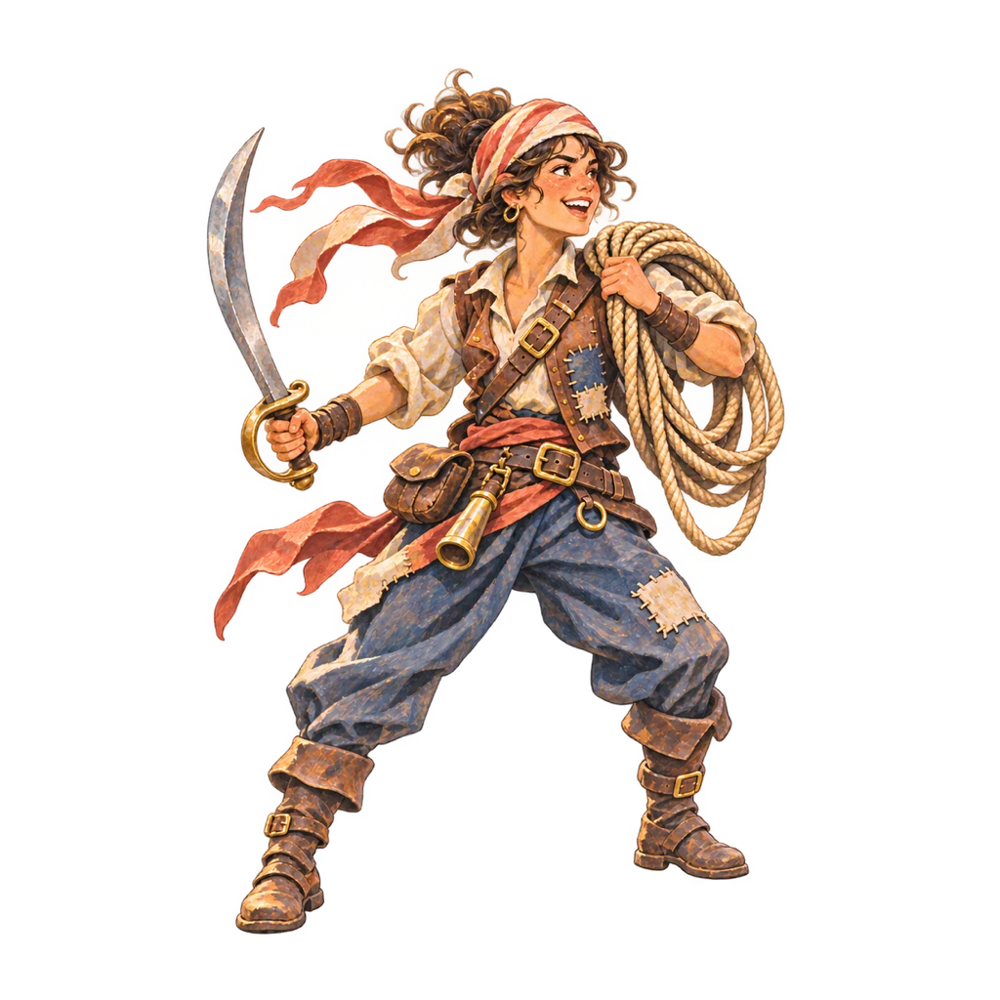

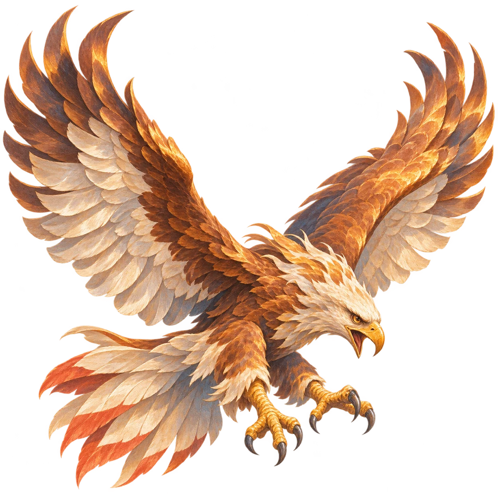
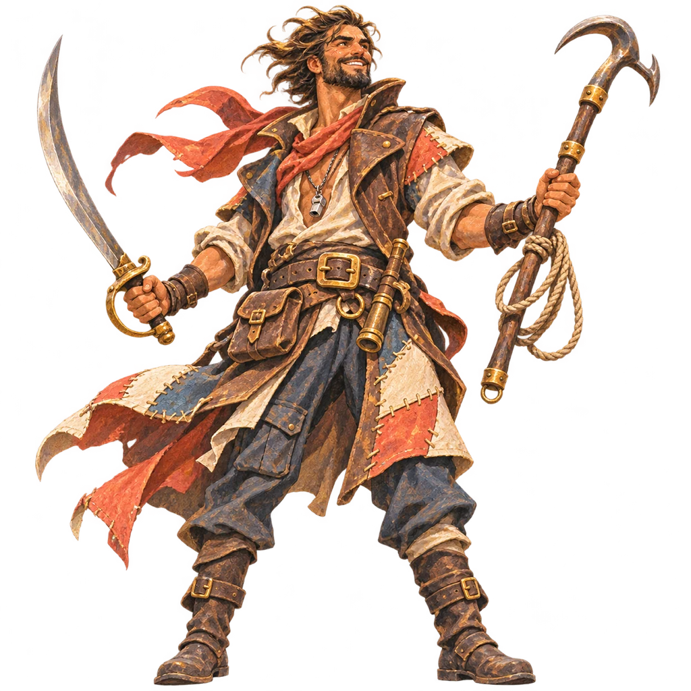
Условия: Герои повернули к Нери у верхних ворот, вытащили её и всё равно первыми по часам гонки пришли к нижней площадке. Цена поворота — 14 минут; −2 за вторую страховку на «Киновари» (Нери не берёт её у экипажа, который её подвёл); −2, если герои знают площадку Гедды (она называет её только тем, кто Нери не подводил); не меньше 10; каждый промах при буксире +2. В момент срыва ведущий говорит честно: «Поворот стоит N (с промахами до N+4). Если после буксира вы впереди больше чем на 4 — первое место ваше. На 1–4 — Дария рискнёт верхом, это открытый бросок». С обеими скидками (цена 10) запас бывает до 8 — можно спасти и победить; без скидок (цена 14) — не больше 4, в лучшем случае бросок Дарии. Ничья после поворота уходит сопернику. Эскиз Пустой вершины повернувшим не помогает.
Первое место и право дать имя странице Атласа. Нери финиширует последней, но в протоколе у неё стоит время, а не «отказ от продолжения».
Цена: Призового резерва нет: денег победителю не платят, пока растрата не возвращена. Минуты поворота не вернуть, отданная страховка не вернётся.
Нижняя площадка Кольца Короны пустеет к вечеру: механики сворачивают тросы, планеры стоят в ряд с опущенными парусами. На доске этапов последняя строка написана мелом, а над ней — новая страница Небесного Атласа с именем, которое дал «Стриж». Денег победителю не платят: призового резерва нет, и пока растрата не возвращена, никто не заплатит ни монеты. Никто на площадке и не спрашивает о призе. Нери Айрен сидит на ящике у ободранной, но целой «Киновари» и смотрит на протокол: напротив её имени стоит время — последнее, но время. Она щёлкает костяшками рамки и ничего не считает. Гедда подходит не сразу. Она кладёт рядом с дочерью вторую половину красного вымпела, ту, что девятнадцать лет пролежала в ящике угольника, и уходит к краю площадки, не дожидаясь ответа. Дария Варр стоит у доски и сухо говорит, что завтрак за ней. Наим переворачивает песочные часы ещё раз — просто так, чтобы песок шёл. Веста закрывает журнал выдачи мела на шнур с печатью. Пробная лента у верхних ворот обвисла: ветер кончился вместе с гонкой.
Условия: Герои повернули к Нери, а после буксира оказались позади или вровень с ближайшим соперником — или были впереди на 1–4 минуты, и Дария выиграла открытый бросок на верхней дуге (d20+5 против Сл 14). Спасение удаётся всегда; время решает только место.
Место по часам гонки, обычно второе. Побеждает тот, кто пришёл первым, чаще всего Дария. Нери финиширует и держит в руке красную ленту.
Цена: Первое место и имя страницы Атласа уходят сопернику. Потраченные минуты не возвращаются никакой спорной строкой.
Нижняя площадка шумит, как пристань после шторма. Первой у черты была Дария Варр, и новая страница Небесного Атласа будет носить имя, которое дала она. Она пишет его мелом сама, медленно, до последней буквы, потом откладывает мел и долго смотрит на «Стриж». Её минуты честные, и она это знает; знает и то, чьи минуты остались у верхних ворот. «Стриж» стоит в протоколе ниже, и время поворота уже не вернёт никакая спорная строка. Нери Айрен финиширует последней и держит в руке красную гоночную ленту — свою, мятую, мокрую от облака. Она ни с кем не говорит. Потом подходит к «Стрижу» и кладёт ладонь на борт, туда, где буксирный трос стёр краску до дерева. Гедда смотрит на это издалека и впервые за весь Обход не поправляет ни одного узла. Гальт Рудой снимает медный шлем и держит его в руках, как на похоронах старой регаты. Наим ставит песочные часы на доску этапов рядом с последней строкой. Песок пересыпается до конца, и никто не переворачивает их обратно.
Условия: Герои не повернули к Нери и прошли отрезки 2–3 по обычному меню минут.
Место по часам гонки, при хорошем отрыве первое. Нери висит на страховке, пока её не снимает спасательная лодка Весты: она жива, но вымотана двадцатью минутами на тросе; «Киноварь» потеряна в облаках, сезон окончен.
Цена: Победа записана мелом без оговорок, но каждый, кто стоял на нижней площадке, видел, как «Стриж» прошёл мимо красного паруса. Гедда молча стоит у края площадки.
На нижней площадке механики бегут к планерам с тросами, и только у одного пустого места никто не суетится: «Киноварь» не вернулась. Её красный парус ушёл в облака, и до весны его никто не найдёт. Лодка Весты причаливает последней. Нери Айрен сходит на камень сама, отводя протянутые руки; на запястьях у неё багровые следы от троса, на котором она провисела двадцать минут, считая вслух. Гедда молча подаёт ей руку, и дочь на этот раз берётся. Доска этапов заполнена до конца. Если «Стриж» первый, его строка стоит наверху, мелом, без оговорок и без спорной записи. Призового сундука нет — есть песок в серой мешковине, и об этом все знают с полой горы. Дария Варр смотрит на доску долго и сухо говорит, что не знает, хотела бы она так выиграть. Наим ставит песочные часы на край площадки и не переворачивает их. Над Кольцом Короны стихает ветер, и все, кто стоял внизу, помнят одно и то же: белый парус прошёл мимо красного у верхних ворот.
Авторская подготовка и техническая проверка не заменяют живую игру. Длительность, сложность и эмоциональное восприятие пока не проверены группой. Иллюстрации (48) созданы генерацией изображений OpenAI в одном стиле; тактические схемы построены из данных встреч. Полный каталог содержит материалы ведущего — публиковать его целиком для игроков нельзя.